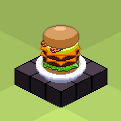

Banger Burgers was my first attempt at a procedurally generated NFT collection, having seen first hand the absolute speculative mania of NFTs in mid 2021
, and wanting to take part.
It was quite the unusual project for me, and I didn't really know how to tackle it. And since I wanted to do something a little different I thought about making something animated.
First, I drew a buncha hamburger ingredients: bread, mayo, ketchup, meat, eggs, pickles, cheese, bacon, even pineapple!
Then I generated around 10k possible combinations using those ingredients in Excel using a VBA macro, and made it spew a HUGE txt file with all those hamburgers,
each one being a string of ingredientes separated by "-"
After that I proceeded with the animation.
To this end I used the Godot game engine. It parsed the HUGE text file into an array of individual burgers, and one by one it rendered the previously designed animation.
Every frame of the viewport was saved as png in the background.
Finally, using ImageMagick in a .bat script I created the 10k animated burgers as gifs using the previously generated frames.
10k animated burgers were assambled over three days of non-stop rendering.
This is where the fun part ends. After the creative part I failed at the point of minting the collection and also with the marketing.
I managed to mint 100 Banger Burgers NFT manually using Holaplex, of which I sold exactly ONE! (If you're reading this, thanks, you rock!).

{kind=link}
{kind=link}
{kind=link}
{kind=link}